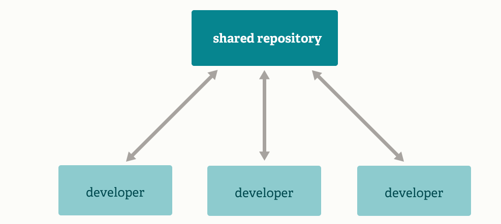
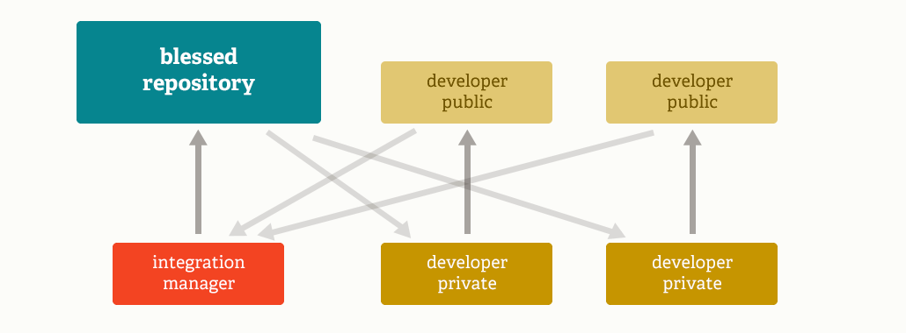
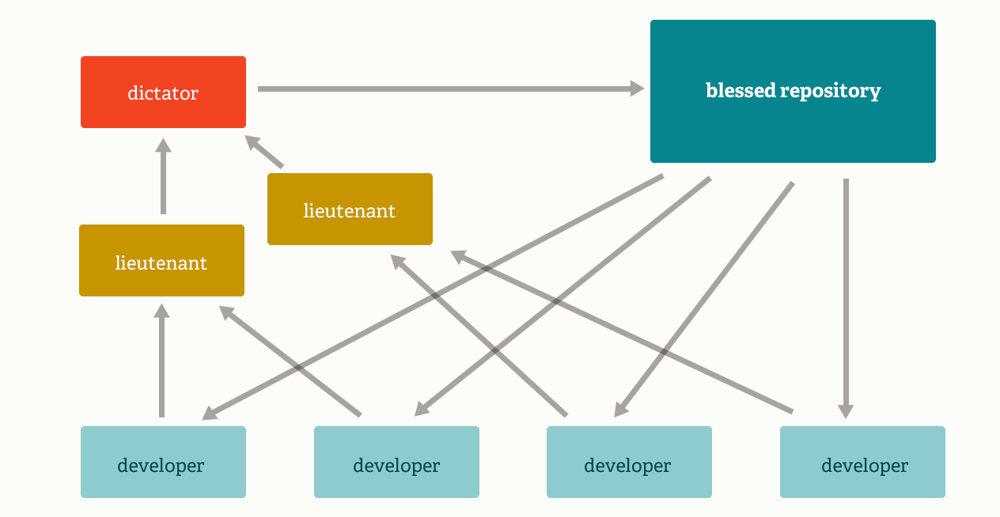

Git
Git 是开源分布式版本控制系统，能够快速有效的胜任小规模到特大项目。在多个方面表现远超同类软件配置管理（SCM，Software Configuration Management），如
Subversion、CVS、Perforce等（官网用了outclasses这个词）。
[TOC]
1.特性
（不展开、在使用中体会。可点链接阅读）
2.命令
安装参考官网： (https://git-scm.com/downloads)。拓展2个问题：
- Git 安装好，如何创建 SSH Keys？
- 如何全局配置多个 git 用户，如 github_user、gitlab_user？
2.1 初始化
初始化，可以是本地创建新的库（git init），也可以是拷贝远程已经存在的库（git clone）。2020 年，github 默认新创建主分支名“main”，不再是“master”。不过，git 软件本身暂时保持不变。
cd $PROJECT_DIR
git init # 初始化，会在当前目录下新建 .git 目录。关注一下.git/config文件即可
# 如果没有全局设置git config --global user.name / user.email
git config user.name "Xiao Ming" # 配置项目用户名
git config user.email "xiaoming@gmail.com" # 配置项目用户邮件
# 默认git会追踪任何在当前目录下的文件，除了定义在.gitignore的文件
touch .gitignore # 创建 .gitignore，语法参考: https://git-scm.com/docs/gitignore
git clone git@github.com:xiaoming/great-project.git
# 或者 `git clone https://github.com/xiaoming/great-project.git`
# 建议使用前者，省去输入用户名、密码
2.2 暂存、提交修改
git status # 查看代码库当前状态，常用且无副作用
git add [file] # 确认文件的修改到暂存区
git reset [file] # 移出暂存区，但保留在工作区的修改
git rm [file] # 删除文件，并写入暂存区
git mv [existing-path] [new-path] # 移动路径，并写入暂存区
git diff # 查看尚未暂存的修改
git diff --staged # 查看暂存、未提交的修改
git commit -m "[message]" # 提交修改。`git commit --amend`，`git commit -am "[message]"`
git log # 查看提交历史。查看A分支但不在B分支的提交，`git log B..A`
2.3 创建、合并分支
git branch [branch-name] # 创建分支。
# `git branch`列出所有本地分支名，带“*”号为当前分支
# `git branch -r` 列出所有远程分支名
# `git branch -a` 列出所有本地、远程分支名
git checkout [branch-name] # 切换到（已存在）分支到当前工作区
# `git checkout -b [new-branch]` 创建并切换到新分支
# `git checkout -b [branchA] [branchB]` 从分支B创建分支A，并切换到分支A
git merge [other-branch] # 合并other分支到当前分支
git branch -d [branch-name] # 删除本地分支
git push origin -d [remote-branch-name] # 删除远程分支
2.4 远程开发
git remote add [alias] [url] # 添加远程库信息，为后续推送作准备。通常 alias 设置为“origin”，也可设置任何其他
git fetch [alias] # 拉取远程所有分支到本地
git pull # 拉取远程代码、并合并对应分支的提交
git merge [alias]/[branchA] # 合并远程branchA分支到本地当前分支，更新到最新状态
git push [alias] [branchA] # 推送本地当前分支到远程branchA分支
2.5 覆盖历史
难点。覆盖分支、更新提交、清空历史、解决冲突
git rebase [branchA] # 把当前分支提交 应用在branchA分支
# 原理是，1.把当前分支提交单独拎出来做个补丁patch，放在.git/rebase目录
# 2.把当前分支更新到branchA
# 3.把补丁应用到当前分支
# 效果类似：pull + merge ，但提交历史干净很多
git reset --hard [commit] # 清空暂存区、并以历史某个提交覆盖工作区
2.6 临时保存
不常用。在切换分支、又尚未完全完成的工作，临时保存后可以待切换回来后恢复工作
git stash # 临时保存修改、并写入暂存区。`git stash list`以堆的形式列出保存的修改
git stash pop # 写入 堆顶部的修改
git stash drop # 舍弃 堆顶部的修改
3.工作流
Git 分布式的特性，决定了现实生活中可以应用很多种协作模式。Git-flow，Github-flow（特别是「Fork-Pull」模式）深入思考、多练习操作。Git 官方网站也介绍了 3 种，看看图了解就好：Subversion-Style Workflow、Integration Manager Workflow、Dictator and Lieutenants Workflow。
3.1 Git-flow
- 由 Vincent Driessen 提出的 Git 分支模型。master/develop/feature/release/hotfix
特性，参考：Introducing GitFlow：
- 多分支平行开发
- 可协同开发 feature 分支
- develop 分支作为发布暂存区域
- hotfix 分支（从打标发布分支 checkout）作为紧急修复
流程（重点、难点！！！，要深入理解背后思想，参考：A successful Git branching model）
- 所有的新开发（新特性、非紧急修复）都在 ftr 分支。ftr 分支从 dev 分支创建出来。
- Ftr 分支开发完成后，合并回 dev 分支
- 到了发布日，从 dev 分支分出 rls 分支。rel 分支仅在有紧急修复时候才开发；紧急修复完，持续集成回 dev 分区。
- rel 分支用于部署-测试-修复-再部署-再测试...。
- 当 rls 分支准备就绪后，合并回 master、dev 分支。合并回 dev 分支，是为了确保 rls 分支的变动不会在新开发丢失。


- 局限，参考 Vincent Driessen 写在 Git-flow 提出 10 年后的反思部分：A successful Git branching model
... git-flow has become hugely popular in many a software team to the point where people have started treating it like a standard of sorts — but unfortunately also as a dogma（教条） or panacea（万能药）.
... This is not the class of software that I had in mind when I wrote the blog post 10 years ago. If your team is doing continuous delivery of software, I would suggest to adopt a much simpler workflow (like GitHub flow) instead of trying to shoehorn git-flow into your team.
... To conclude, always remember that panaceas（万能药） don't exist. Consider your own context. Don't be hating. Decide for yourself.
3.2 Github-flow
Github 平台作为最著名的开源代码托管平台，成功背后有赖于其对 Git 功能普及及应用。积累下来的一套开发流程，即 Github-flow。
步骤，参考：Understanding the GitHub flow
- 创建分支
- 主分支永远可部署。意味着所有新分支都是从主分支分出，包括特性分支和紧急修复分支。
- 分支名本身是有含义的。如，refactor-authentication （重构验证模块）、user-content-cache-key（用户内容缓存键）、make-retina-avatars（制作支持 retina 显示的头像）
- 发开、并 commit
- 提交的备注文字很重要
- 发起 pull 请求
- 发起 pull 请求会初始化一个就提交的内容的讨论
- 发起 pull 请求是参与开源项目有用方法。如果使用的 fork-pull 模型，发起 pull 请求能够让项目维护者看到你的提交；如果使用的共享（shared）库，发起 pull 请求有助于项目成员进行代码审查、了解即将被合并到主分支的内容。
- 讨论、代码审查
- pull 请求的评论采用 markdown 语法，可以插入图片、表情符号、文本块和其他高亮特性。
- 部署
- 针对那些准备合并到生产的分支，进行部署测试（利用好 Git Actions 功能）
- 合并
- 修改已经部署通过、合并该分支到主分支
- pull 请求历史可以被查看，为什么这么做
- 一旦 merged，pull 请求被关闭
- 创建分支
补充说明 fork-pull 模型，假设
某位大佬 A 在 github 开源了某个项目 p，地址：
https://github.com/DaLao/great-project小明在浏览 github 网站看到了该项目，并且很感兴趣、想贡献代码。点击项目主页右上角「Fork」按钮。
这时候小明自己 github 主页下多了一个项目，地址：
https://github.com/XiaoMing/great-project，且项目名下方有个小标识fork from DaLao/great-project小明拉取代码到本地，代码：
git clone git@github.com:XiaoMing/great-project.git或者git clone h ttps://github.com/XiaoMing/great-project.git小明有个 great idea 想要实现，所以先从主分支分出一个开发分支，代码：
git checkout -b dev-great-idea一顿猛如虎的操作后，完成分支开发。现在合并到自己本地主分支，代码
git add . git commit -m 'finish great-idea' git checkout master git merge dev-great-idea看到本地主分支，小明会心一笑，很有成就感。提交到自己远程主分支。代码：
git pull origin master git push origin master这时候，小明打开 github 主页，发现自己主分支已经收到提交。点击项目代码上方的「Pull request」，在大佬项目主页就会收到一个 pull 提醒，同时对你修改的代码开始自动测试。如果测试通过，等到大佬上网，就可以收到通知。经过大佬的斟酌，认为小明的想法很好，且代码质量较高。大佬就会同意小明的提交合并到大佬的项目中，这时候 pull re quest 完成，小明完成了对 great-project 的一次代码贡献。（哈哈 可以修改简历，“曾对 great-preject 贡献代码，pull request 链接：xxx”。以上就是 Github「Fork-Pull」模式参与大型开源项目的工作流程。
3.3 Subversion-Style Workflow
- SVN 中心化代码开发流程

3.4 Integration Manager Workflow
- 像 Github 平台开源项目的开发流程

3.5 Dictator and Lieutenants Workflow
- 像 Linux 内核开发流程

4.相关人物
4.1 Git 之父 - Linus Torvalds
Linus Torvalds，不用多说，应该是神级别的存在。Linux 内核最早作者，随后开源了项目，担任 Linux 内核的首要架构师与项目协调者，是当今世界最著名的电脑程序员、黑客之一。2005 年，为了管理 Linux 内核的源代码而开发了 Git。
自 2002 年开始，Linus Torvalds 决定使用 BitKeeper 作为 Linux 内核主要的版本控制系统用以维护代码。因为 BitKeeper 为专有软件，这个决定在社区中长期遭受质疑。在 Linux 社区中，特别是理查德·斯托曼与自由软件基金会的成员，主张应该使用开放源代码的软件来作为 Linux 内核的版本控制系统。林纳斯·托瓦兹曾考虑过采用现成软件作为版本控制系统（例如 Monotone），但这些软件都存在一些问题，特别是性能不佳。现成的方案，如 CVS 的架构，受到林纳斯·托瓦兹的批评。
2005 年，安德鲁·垂鸠写了一个简单程序，可以连接 BitKeeper 的存储库，BitKeeper 著作权拥有者拉里·麦沃伊认为安德鲁·垂鸠对 BitKeeper 内部使用的协议进行逆向工程，决定收回无偿使用 BitKeeper 的许可。Linux 内核开发团队与 BitMover 公司进行磋商，但无法解决他们之间的歧见。林纳斯·托瓦兹决定自行开发版本控制系统替代 BitKeeper，以十天的时间编写出 git 第一个版本。
4.2 Git-flow 提出者 - Vincent Driessen
作者个人博客：https://nvie.com/about/
5.参考资源
免费 Git 代码托管服务
- https://github.com
- https://gitlab.com （Github 有力竞争者。个人可免费创建无上限个数的私有库。Github 没办法也逐渐免费）
- 码云 https://gitee.com
Git GUI
- Git 官网列举 GUI Clients（Mac）：https://git-scm.com/download/gui/mac
- Github Desktop（Mac）：https://desktop.github.com
其他链接
- 官网：https://git-scm.com
- 各类编程语言.gitignore 模板 https://github.com/github/gitignore
- git-flow cheatsheet：https://danielkummer.github.io/git-flow-cheatsheet/